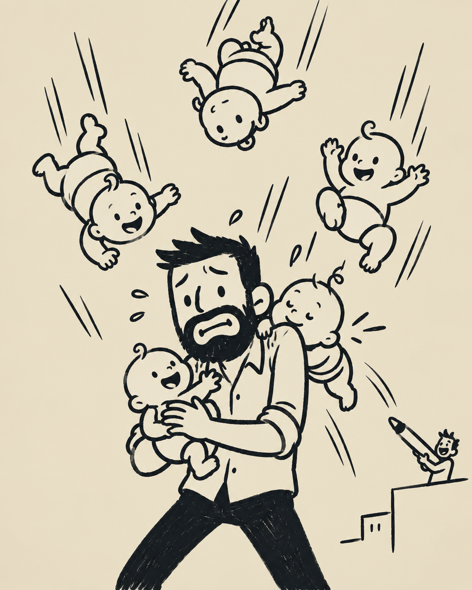

Ceuta
Supongamos que alguien me tira pizzas a la cabeza. ¡Espera! Las pizzas me encantan y quizá no sean el mejor ejemplo. Mejor brócoli.
Tampoco. El brócoli lo detesto. ¡Ya está! Supongamos que alguien me tira bebés a la cabeza. Algo que no me encanta ni detesto.
No me gusta que me lancen bebés a la cabeza. De hecho, no me gusta que me lancen nada. Pero, por nada del mundo, quiero que me metan en el mismo saco que esa gente que odia a los bebés.
Además, los avatares del destino han provocado que haya compartido mucho tiempo con bebés durante estos últimos años. Como consecuencia, actualmente muchas de las personas a las que más cariño tengo son bebés.
Y el hecho de tener que cuidar a todos los bebés que me lanza un imbécil menoscaba inevitablemente el cuidado que puedo prestarles a aquellos a los que tanto cariño he cogido.
Por eso creo que estoy incluso más en contra de que me lancen bebés que la gente que odia a los bebés per se. ¡Ojo! Esto no quiere decir que, si encuentro un bebé, no vaya a defender que hay que acogerlo. Los bebés tienen derecho a una vida digna.
Uno puede ir adaptando poco a poco la vida para cuidar a más bebés. Puedo dar fe. De hecho, existen razones tanto económicas como humanitarias que nos invitan a hacerlo. Dan preocupaciones, pero tienen unos mofletes muy graciosos.
Pero una cosa es cuidar a los bebés que aparezcan y otra muy distinta es que alguien me lance bebés con la intención de hacerme daño. ¿Qué hacemos ahora?
Por un lado, tenemos a quienes tienen la calidad humana de una air fryer y abogan por que tiremos a los bebés al mar. Pero es que, al otro lado…
Nos lanzan una marabunta de bebés «chupaos». Miramos hacia atrás y hay un imbécil con un boli Bic vacío, del tamaño de un bebé, utilizándolo como cerbatana. Algo habrá que decirle para que no siga.
La metáfora ya no da más de sí. De modo que hasta aquí el análisis. Si Ferreras me llama, tendréis más metáforas como esta en La Sexta Noche.
